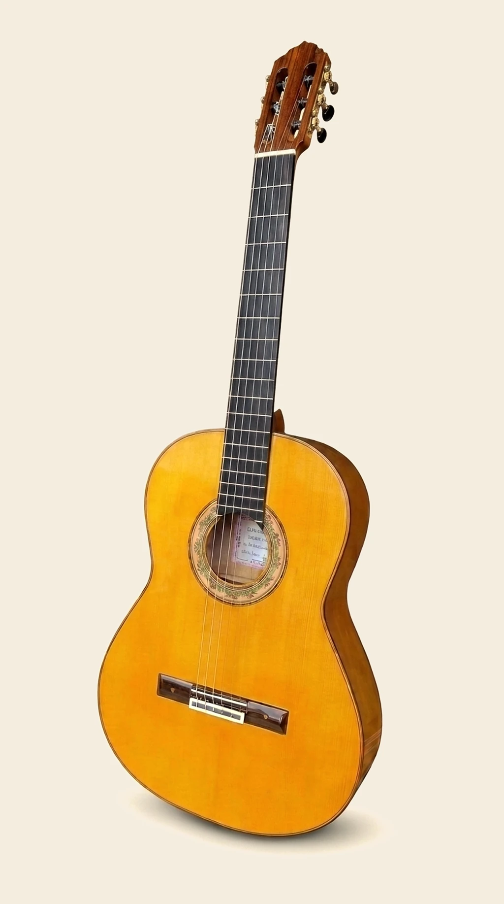

Nuestro taller
Barnizado y reparación de guitarras
Además de construir instrumentos nuevos, cuidamos de los que ya existen. Barnizamos, restauramos y reparamos guitarras con el mismo criterio artesanal que aplicamos a las nuestras.
Barnizado de guitarras
Barnizado a poliuretano y nitrocelulósica. Preparación de la superficie, aplicaciones controladas y acabado final para devolver a tu guitarra el aspecto y la protección que merece.
También trabajamos el barnizado tradicional a goma laca, capa a capa y a muñeca, para quienes buscan el acabado clásico de los instrumentos artesanales.
Pedir presupuestoReparación de guitarras
Revisión y reparación de todo tipo de problemas: grietas, uniones, puente, mástil, clavijero, trastes y ajustes de acción y entonación.
Cada guitarra se evalúa individualmente antes de presupuestar la intervención, para proponer siempre la solución más respetuosa con el instrumento.
Consultar mi guitarra
Cómo trabajamos
Revisión, presupuesto y intervención
Cuéntanos qué le pasa a tu guitarra o qué acabado buscas. Revisamos el instrumento, te explicamos con claridad qué necesita y te damos un presupuesto antes de tocar nada.
Solo empezamos cuando tú das el ok. Y cuando termina, la guitarra vuelve a tus manos revisada y lista para seguir haciendo música muchos años más.
Contactar con el tallerDale una segunda vida a tu guitarra
Escríbenos con una descripción del estado del instrumento y, si puedes, con algunas fotos.